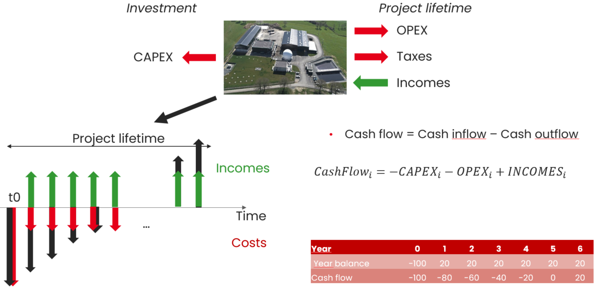
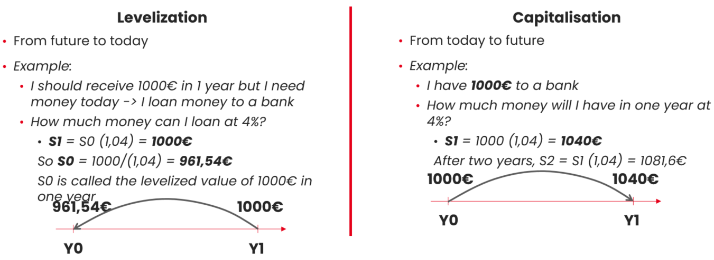

Investment decision
A short introduction
The objective function is divided between short term and long term objectives :
Economic function: should we buy something more expensive but that makes us save money later ?
Environmental function: should we invest in a big battery that makes us save CO2 later if its construction causes many CO2 gases ?
The answer is often a compromise! It depends on how we model the future…
A project is defined with a start date and a duration. Through this period, there are cash outflows (CAPEX, OPEX) and inflows (incomes). A cash flow of year i is defined as the difference between cash inflow of year i and cash outflow of year i.
{kind=link}

Fig. 19 Cash flows of a project
Often, the fact that the value of money is not constant is taken into account to check whether a project is profitable or not.
Money value through time
Principle :
Two amounts of money are not equivalent if they are not available at the same time. Levelization and capitalisation allow to compare two amount of money available at different times.
{kind=link}

Fig. 20 Money through time
Either none of the cash flow is levelized and it is like ‘technical costs’ are considered either all the cash flows must be levelized.
The discount rate is linked to capital costs that are incurred by the project owner and to the risk of the project.
Several indicators can be used to evaluate the profitability of a project :